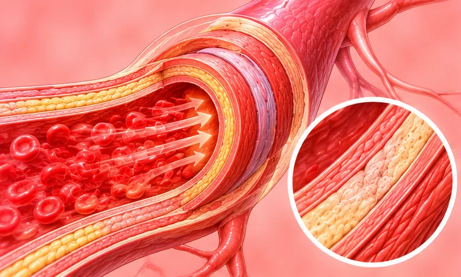
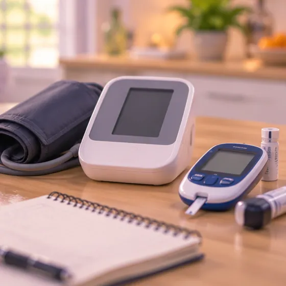

肾性高血压
由肾脏或肾脏血管的问题引起的高血压
这是什么
肾脏帮助调节血压。当肾脏受损或血液供应不足时，血压可能升高，而高血压又会进一步伤害肾脏。
- 肾脏，位于背部两侧
- 成年人，有时是年轻人
- 常无症状，血压偏高
- 就诊科室
- 肾脏科医生、家庭医生
- 多发人群
- 有肾脏病、糖尿病或长期高血压的人
- 传染性
- 不传染
- 病程
- 通常是长期的，需要定期检查；由医生指导照护
常见表现

早期常无症状无症状 腿脚水肿外周水肿 夜间起来小便夜尿 
没有胃口食欲减退
其他症状
- 头痛（尤其在早上）或头晕
为什么会这样

血糖或血压偏高代谢危险因素
其他原因
- 长期的肾脏疾病或肾脏损伤
- 通往肾脏的动脉变窄
- 肾脏发炎、囊肿，或先天性的肾脏问题
出现这些情况请先看医生
- 胸痛、呼吸困难或昏倒：拨打999
- 脸部歪斜、手臂无力或说话困难：拨打999
- 血压很高，并伴有严重头痛、视力模糊或意识混乱：立即去医院
- 尿量明显减少、尿中带血，或肿胀越来越严重
- 已经服药但血压仍然偏高
如果有以上情况，请先看医生，再来做调理。
本页只是一般性的健康资讯。请继续按时服用平常的药物，并继续看医生。
请继续日常治疗
请继续按医嘱服药，并按时复诊。我们的调理是温和的辅助，不能代替医疗。
日常护理

定期看医生复查定期随访 在家测量血压家庭血压监测 少吃盐低盐饮食 
咨询药剂师药剂师建议 
戒烟戒烟
告诉理疗师
- 肾脏或肝脏疾病
- 高血压
- 心脏病
- 糖尿病或皮肤感觉减退
- 怀孕
调理师会在开始前和你确认这一项。
相关疾病
参考资料: General information based on public health sources such as Mayo Clinic, NHS, Cleveland Clinic and NCBI StatPearls.
页面更新: 2026-10-31